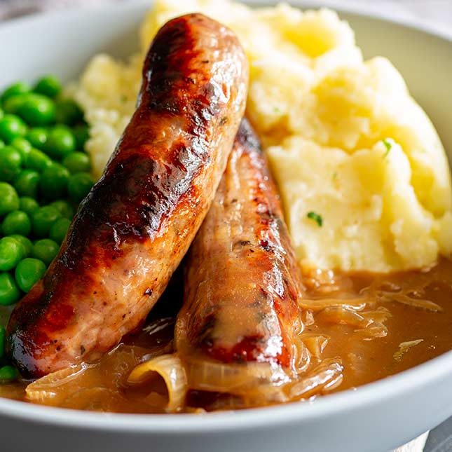

Bangers and Mash Recipe

Description
Here we will go through everything you need to make Big Bro's Bangers and Mash.
Ingredients:
- 8 large baking potatoes, peeled and quartered.
- 2 teaspoons butter, divided
- ½ cup milk, or as needed
- salt and pepper to taste
- 1 ½ pounds beef sausage
- ½ cup diced onion
- 1 (.75 ounce) packet dry brown gravy mix
- 1 cup water, or as needed
Steps:
- Preheat the oven to 350 degrees F (175 degrees C). Place potatoes in a saucepan with enough water to cover. Bring to a boil, and cook until tender, about 20 minutes. Drain, and mash with 1 teaspoon of butter, and enough milk to reach your desired creaminess. Continue mashing, or beat with an electric mixer, until smooth. Season with salt and pepper.
- In a large skillet over medium heat, cook the sausage until heated through. Remove from pan, and set aside. Add remaining teaspoon of butter to the skillet, and fry the onions over medium heat until tender. Mix gravy mix and water as directed on the package, and add to the skillet with the onions. Simmer, stirring constantly, to form a thick gravy.
- Pour half of the gravy into a square casserole dish so that is coats the bottom. Place sausages in a layer over the gravy (you can butterfly the sausages if you wish). Pour remaining gravy over them, then top with mashed potatoes.
- Bake uncovered for 20 minutes in the preheated oven, or until potatoes are evenly brown.